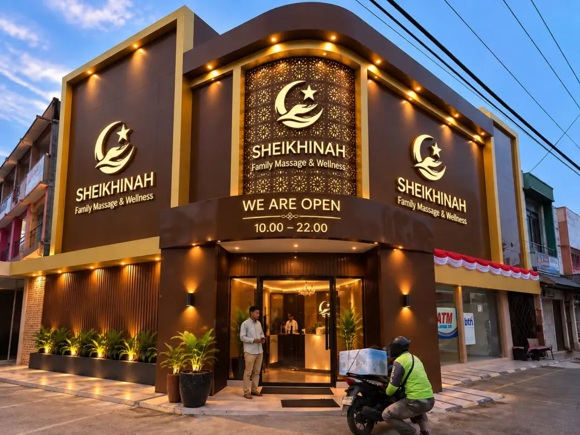

Ketika mencari tempat pijat atau massage di Palembang, kualitas treatment bukan satu-satunya hal yang perlu dipertimbangkan.
Kebersihan ruangan, privasi selama treatment, keterampilan terapis, serta standar pelayanan juga menjadi bagian penting dari pengalaman tamu.
Di Sheikhinah Family Massage & Wellness, hal-hal tersebut menjadi bagian dari standar operasional yang diterapkan dalam pelayanan sehari-hari.
Sheikhinah berlokasi di Jl. Siaran No. 100, kawasan Simpang Borang Sako Baru, Kecamatan Sako, Palembang, dengan konsep:
“Istana Relaksasi bagi Tubuh dan Jiwa.”
Sebagai fasilitas massage keluarga berstandar tinggi, Sheikhinah berupaya menghadirkan lingkungan treatment yang:
BERSIH • NYAMAN • PROFESIONAL
dengan perhatian khusus pada privasi dan batas pelayanan yang jelas.
1. Terapis Terlatih & Berpengalaman
Massage sangat dipengaruhi oleh keterampilan terapis yang memberikan treatment.
Karena itu, Sheikhinah menempatkan pengembangan keterampilan terapis sebagai bagian penting dari standar pelayanan.
Terapis mendapatkan pembekalan dan pengembangan keterampilan sesuai treatment yang diberikan, termasuk standar kebersihan, pelayanan kepada tamu, etika profesional, serta SOP treatment Sheikhinah.
Sheikhinah juga mendorong keterlibatan terapis dalam organisasi dan ekosistem wellness yang relevan sebagai bagian dari pengembangan profesional.

2. Area Treatment Pria & Wanita Terpisah
Privasi menjadi salah satu bagian penting dalam konsep Family Massage & Wellness di Sheikhinah.
Secara default:
- Tamu pria dilayani oleh terapis pria.
- Tamu wanita dilayani oleh terapis wanita.
Area treatment pria dan wanita juga dipisahkan secara struktural untuk memberikan kenyamanan mutlak dan menjaga privasi selama treatment. Standar ini berlaku sebagai bagian tak terpisahkan dari sistem pelayanan Sheikhinah.

3. Private Room Untuk Pasangan & Keluarga
Bagaimana jika pasangan suami istri atau keluarga ingin menikmati massage bersama?
Bagi Anda yang secara khusus menelusuri tempat pijat dengan private room yang aman, Sheikhinah menyediakan private room dengan kapasitas berbeda untuk pasangan suami istri atau keluarga yang datang bersama.
Penggunaannya menyesuaikan kapasitas dan ketersediaan ruangan pada saat reservasi.
Dengan demikian, konsep pemisahan area pria dan wanita tetap menjadi standar pelayanan, sementara keluarga yang datang bersama tetap memiliki pilihan untuk menikmati waktu relaksasi dalam satu ruangan.
4. Kebersihan Sebagai Bagian Dari Customer Experience
Kebersihan bukan hanya soal tampilan ruangan.
Di Sheikhinah, kebersihan menjadi bagian integral dari proses pelayanan sebelum dan setelah treatment.
Room turnover dilakukan untuk mempersiapkan ruangan bagi tamu berikutnya, termasuk penataan kembali perlengkapan treatment dan pengecekan kondisi ruangan.
Perlengkapan seperti linen dan handuk dikelola secara ketat untuk menjaga kebersihan dan kenyamanan setiap tamu.
Peralatan yang digunakan dalam treatment juga dibersihkan sesuai kebutuhan dan SOP masing-masing layanan. Pendekatan ini diterapkan sebagai bagian dari standar operasional sehari-hari, bukan sekadar elemen visual.
5. Signature Aroma Lemongrass
Salah satu karakter yang mudah dikenali ketika memasuki Sheikhinah adalah aroma lemongrass.
Aroma ini menjadi signature aroma Sheikhinah dan melengkapi interior bernuansa hangat serta pencahayaan yang nyaman.
Lemongrass digunakan sebagai bagian dari ambience dan pengalaman sensorik selama berada di Sheikhinah.
Fungsinya dalam komunikasi publik Sheikhinah adalah murni sebagai elemen aroma dan pembentuk suasana relaksasi, bukan sebagai klaim sterilisasi atau antibakteri ruangan.
6. Standar Profesional & Batas Pelayanan Yang Jelas
Konsep Family Massage & Wellness membutuhkan standar pelayanan yang jelas.
Karena itu, pemisahan area pria dan wanita, kebijakan gender terapis, ketersediaan private room untuk pasangan dan keluarga, kebersihan ruangan, serta SOP terapis menjadi bagian dari satu sistem pelayanan yang utuh.
Tujuannya adalah memberikan pengalaman yang nyaman dan profesional bagi tamu yang datang sendiri, bersama pasangan, maupun bersama keluarga.
Bagi Sheikhinah, profesionalisme bukan hanya tentang bagaimana treatment diberikan. Profesionalisme juga terlihat dari bagaimana privasi dijaga, bagaimana ruangan dipersiapkan, bagaimana tamu dilayani, dan bagaimana standar tersebut diterapkan secara konsisten dari waktu ke waktu.
Mencari Tempat Pijat Bersih di Sako Palembang?
Bagi Anda yang mencari tempat pijat bersih di Sako Palembang, tempat relaksasi di Sako yang aman untuk wanita berhijab, atau destinasi wellness keluarga di kawasan ini, kunjungi fasilitas kami di:
Jl. Siaran No. 100, Sako Baru
Kecamatan Sako, Palembang
Kawasan Simpang Borang Sako Baru
(seberang Okta Gadget)
Buka setiap hari: 10.00–22.00 WIB
Reservasi WhatsApp: 0815-3476-8989
Website: sheikhinah.com
FAQ — Kebersihan, Privasi & Pelayanan Sheikhinah
Q: Apakah area treatment pria dan wanita terpisah?
A: Ya. Area treatment pria dan wanita dipisahkan. Secara default, tamu pria dilayani oleh terapis pria dan tamu wanita dilayani oleh terapis wanita.
Q: Apakah tersedia private room?
A: Ya. Tersedia private room dengan kapasitas berbeda. Pasangan suami istri atau keluarga yang datang bersama dapat menggunakan private room sesuai kapasitas dan ketersediaan.
Q: Bagaimana Sheikhinah menjaga kebersihan ruangan?
A: Room turnover dilakukan untuk mempersiapkan ruangan bagi tamu berikutnya, termasuk penataan perlengkapan treatment dan pengecekan kondisi ruangan. Kebersihan merupakan bagian dari SOP pelayanan Sheikhinah.
Q: Apakah terapis Sheikhinah memiliki pelatihan?
A: Terapis mendapatkan pembekalan dan pengembangan keterampilan sesuai treatment yang diberikan, termasuk standar pelayanan, kebersihan, dan etika profesional.
Q: Apakah kartu asosiasi yang ditampilkan merupakan lisensi?
A: Kartu keanggotaan asosiasi ditampilkan sesuai status sebenarnya sebagai bukti keanggotaan. Keanggotaan asosiasi tidak disebut sebagai lisensi nasional.
SHEIKHINAH FAMILY MASSAGE & WELLNESS
“Istana Relaksasi bagi Tubuh dan Jiwa”
TERAPIS TERLATIH & BERPENGALAMAN
BERSIH • NYAMAN • PROFESIONAL
AROMA LEMONGRASS